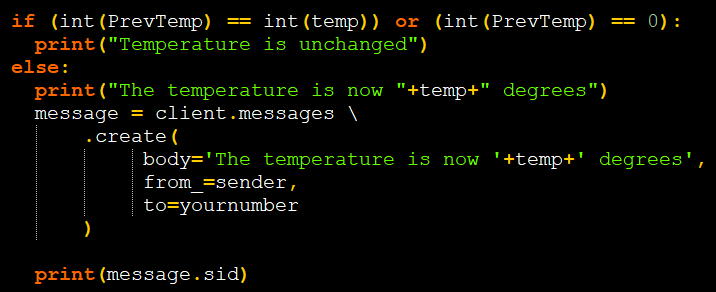

Cole made the code that sends the text with the new temperature to the user if the temperature has changed.

We used a file storing techique to store the temperature in a seperate file so the program could open it every time and see the old
temperature, and compare the new temperature that it scraped to it to determine if it had changed.
If statments were utilized throughout the program (obviously) to locate the temperature depending on the length of the string, which would determine
the characters it needs to extract to get the temperature.
Liam used lists in the GUI to get inputs from the user, along with using tkinker to make the acutal GUI.